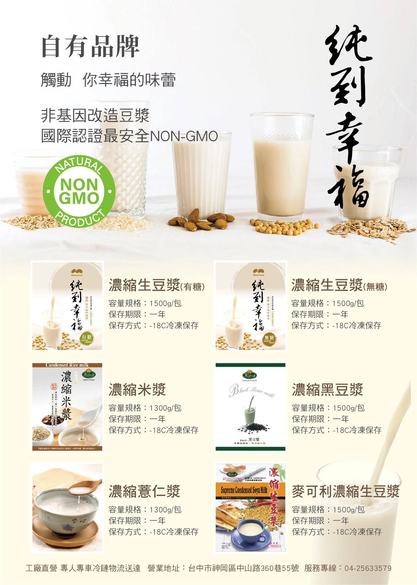
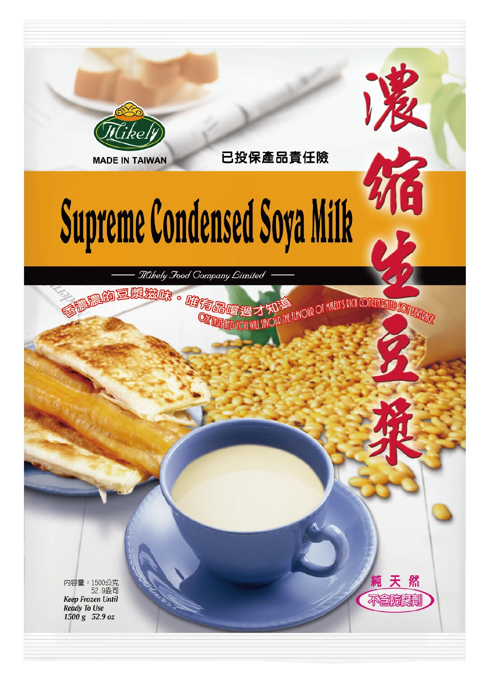

冷凍生漿系列
免泡豆、免研磨，整包下鍋煮滾即可。生豆漿、黑豆漿、米漿、薏仁漿一間工廠一次備齊，全系列 -18℃ 冷凍保存一年。

主力商品NON-GMO1500g
純到幸福 濃縮生豆漿（有糖／無加糖）
| 成分（無加糖） | 水、黃豆（非基因改造） |
|---|---|
| 黃豆產地 | 加拿大、美國 |
| 規格 | 1500g／包 |
| 保存 | -18℃ 冷凍保存一年 |
煮法：3500～4000cc 滾水，整包免解凍倒入，持續大滾 5～10 分鐘。

1500g
濃縮青仁黑豆漿
| 成分 | 水、黑豆、黃豆（非基因改造）、砂糖 |
|---|---|
| 規格 | 1500g／包 |
| 特色 | 採用加拿大及美國非基改指定豆種，無添加防腐劑 |
| 保存 | -18℃ 冷凍保存一年 |
煮法：3000～3500cc 滾水，整包免解凍倒入並攪拌，起泡後稍轉小火，持續大滾 5 分鐘。

1300g
濃縮米漿（有糖）
| 成分 | 水、砂糖、蓬萊米、花生、糯米粉、馬鈴薯澱粉 |
|---|---|
| 規格 | 1300g／包 |
| 特色 | 無添加防腐劑；未使用添加劑，沉澱屬自然現象 |
| 保存 | -18℃ 冷凍保存一年 |
煮法：3500～4000cc 滾水，拆封倒入攪拌加熱至沸騰，轉小火持續加熱 6 分鐘。

1300g
濃縮薏仁漿（無糖）
| 成分 | 水、大薏仁、紅薏仁、黃豆（非基因改造） |
|---|---|
| 規格 | 1300g／包 |
| 特色 | 特選薏仁、全自動化研磨 |
| 保存 | -18℃ 冷凍保存一年 |
煮法：3500cc 滾水，整包免解凍倒入並攪拌，起泡後轉小火持續加熱 6 分鐘。

1500g
麥可利 濃縮生豆漿（經典款）
| 規格 | 1500g／包 |
|---|---|
| 黃豆來源 | 待確認 |
| 特色 | 純天然・不含防腐劑・已投保產品責任險 |
| 保存 | -18℃ 冷凍保存一年 |
煮法：3500～4000cc 滾水，整包免解凍倒入，持續大滾 5～10 分鐘。